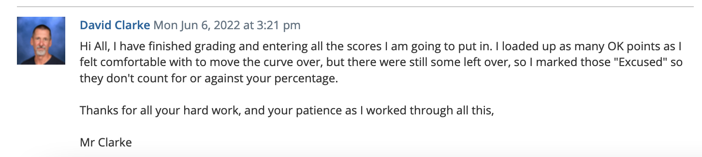

I always thought that Lit was supposed to be an easy class. A chill and fun class where you don't really have to worry about your grade dropping to a b, and where you write one or two essays per book which arn't even graded that hard. Clarke proves otherwise. In Clarke's class, you can't just wing reading the book, and you definetily caan't wing the essay's on writing assignments, because thats gonna take a tole on your grade. Clarke grades a bit hard. And a bit is probably a bit of an understatement - even the best writers didn't get A's on the first rq's, the highest grade was a b+ (depressisng, i know). But that doesnt hold up for the rest of the semester, and grades go up. in the beginning, people just don't write how Clarke wants them to, and he hands out Bs and Cs. Then he starts giving out tips on what he wants, and then everyone's grades improve. That's why starting assignments are worth less, and later assignments more, to "reward those that show improvement"(Clarke), so you should take advantage of that and try to improve(obviously). A B is a decent grade in Clarke, but it'l likely keep you hanging very close to the a/b cutoff, which is scary when its the end of the semester and the last few assignments decide your grade (and life). Btw these are based on Clarke grading scale (2021-2022). A B+ is a decent grade, and should be enough to hold your grade at an A, but its still a bit risky. An A- and A are pretty good and if you get one just try to keep it up. We don't talk about A+s. When you get an A+ you get "touched by god". But one thing to not miss definetily is ok poitns. They are clarkes version of graded on completion assignments, and do not miss any of them or your grade will tank (trust me it will). Theyr free points and shame on you if you dont get them (jk). Ok thats probably a lot for an intro but ok then Something stupid ritam help me make this
Clarke is actually a nice person. He's also a good teacher, even though his style and hard grading and enormous amount of writing may suggest otherwise. The amount of writing that he gives is an immense amount of practice which makes you better at writing. His hard grading makes sure that you keep striving to get better and better at writing, so at the end of the class you are almost garunteed to be a way better writer. This also explains why he doesn't give A+s very often. Overall though, I beleive that Mr. Clake is a pretty nice guy and good teacher. No, he's not the nicest like Mr. Nguyen who lets you record and timelapse poster making (we actually tried once and Clarke told us to stop :\), but he is nicer than a lot of teacher, and is at least understanding. For example, he does care about what people think about his class, and he's pretty open to feedback, so you should tell him if you don't like something. However, I think he would be an excellent teacher of AP lit (and he probably is), and he treats his World Lit class the same, with the same amount of writing. Also you should check out his Facebook...
Update at very end of year: Clarke is still nice, but what he did at the end of the year made me like him a bit less. First of all, at the end of the year, he introduced a new type of writing for magical realism called "SE: Structrued essay". LIke any clarke writing assingment, he as specific expectation, and that makes all Clarke writings harder when you first start them. So, at the end, he graded them hard like usual, and most people didnt do that well (i mean b/b+, not too good for his class), and some people did pretty badly, which made me wonder why Clarke decided to introduce this at the very end of the year. In addition, for the magic realism unit, he crammed a bunch of excerpts from stories and had SEs on every single one of them, and yeah... At that point I was thinking why Clarke had to make us write till the very end, and why he couldnt give us a break (have a break, have a kit kat). I mena, like maybe he wanted to raise our grades, and maybe extra SEs would be the way to do that, but then why didn't he grade them nicely? Clarke is a great teacher in most aspects, fails to give the same easy experience that a non AP World Lit class should have...
The class is pretty hard, as you probably know and expect. However, its not impossible to succeed in it, you just need to try hard and not wing the class. The class is devided into two main things that make your grade, in class activities and writing assignments. In class activities are usually OK'd which in english means graded on completion. HOWEVER, as stated earlier these are actually pretty important to your grade and you should not miss them. The writing assingments are graded on quality and quantity. The consist of RQs, or "reading quizzes" which are basically 1/2 essays on a passage, Rlogs, or "reading logs" which are 1/4 essays responding to a self made prompt, LC's or "lit circle essays" where you analyze a scene and get opinsions of people in your group, or circle, and SEs or "structured essays", which are full on written essays where he tells you what to write. Usually, Rlogs are for homework and are worth less points, which the RQs, LCs, and Ees are worth more and are done in class. In the class there is tons of writing pretty much as much as Clarke's ap class. You should expect at least one writing assignment (LC/RQ/SE) per week, although on some weeks he gives none of those.
Rqs are basically 1/2 essays written in class analysing a passage written in 30 minutes. They're worth the majority of your grade so its pretty important to not f those up. Clarke has very specific expectations for rqs, and even the best writers don't get As on their first Rqs (b+ was the highest grade). Every teacher's expectations are different, and Clarke is no exception. Even Clarke admits that “It’s not that they’re bad”(Clarke) and they are just not “the way [he] wants them”(Clarke). I can't spill a whole lot of tips on rqs but here are some. 1. Read the book and know it (trust me dont wing it) 2. Don't put any questionable analysis 3. Talk to the smart people and get freeeee analysis. However, even if you arn't about to get As or A-s, it's still possible to get an A(-) in Clarke while getting all writing assignments Bs and below (tried and tested for grading scale 2021-2022), but do not miss any freee notebook checks or easy assignments.
Although rqs are graded somewhat arbitrarily, there are some people who always manage to get As and A-s on them. I always wished that these smart people told me how to get it until i got an A. The thing is, there isn't just one secret that makes you get an A but your analysis just has to be good and you can't f up on any other part of it. I got 1 A, which was sort of random. I did nothing special on it, and it didnt even look that good when i looked back at it and compared it to other ones. That's just how it is. And thats partly why the samples arn't of much help too.
If you go and ask Mr. Clarke for help, he’ll tell you to look at the samples. So are they helpful? Sort of, but not really. Basically, when you look at them probably won’t see anything, and it's really hard to find anything without knowing what you’re looking for (mainly for the analysis). Some RQs have more of something, and other RQs have more of another thing, but they usually have one thing in common: reasonable analysis. But sound or unsound is Clarke's decision. So, if you go to the samples without looking for anything in advance, you probably won’t find anything and will think that Clarke’s grades are arbitrary (and they are to an extent, see this(LINK down to arbitrary)). But the samples got A’s for a reason, and you can ask Clarke about them. In fact, someone explicitly asked him “Why did this person get an A and I didn’t?” And Clarke told him (sorry idk if we can say what). Is it worth studying the samples, though? From my experience, no, partly because it didn’t work, and also because what he’s looking for changes from book to book, as does his grading style. For two rq’s in a row I studied the samples, and i got two b’s (rip). However, You should study one thing: The book
Rlogs are kinda obsolete as of 2022 and clarke phased them out for wl in fall 2021. Nevertheless i probably shud talk about them in case clarke decides to pull a magic trick and bring them out again. Basically what rlogs are 1/4 essays where you respond to your own prompt. theyr not as hard as rqs lcs and ses but they are actually worth quite some points. In contrast to other wiritns assignments, these are written at home as homework. If clakre does decide to use them again, just try to talk about the psychology of characters and their thoughts in them - thats my number 1 advice. Rqs will genertally have a discussion (schoology discussion) before you actually do it to brainstorm prompts, and try to get a good prompt, even if you have to steal from somebody else (thats allowed). But do know that if 2 people do the same prompt, they may be compared between during grading(clarke does that for essays). Rlogs are generally worth 10-20 points i think and theyr relatively free compared to other writings
Hm i kinda forgot about lcs but whatever ill do my best. Lcs are basically full essays where you write about an incident/prompt that you chose, and then you take opinions from other people and wriite those. it needs to have analysis, basicaly like eveyr other clarke assignment. uh i think thats all i remember srry
SEs are fked. Clarke started introducing them at the end of the second semester in 2022 for short stories. basically what they are is that clarke gives you a prompt and tells you what to write in each of the paragraphs and then you just have to write and then put ur own analysis and find out an authors message. this is sometimes kinda hard because stories might not have legitimate message or the message might just be kinda stupid and hard to write about. Take reservation blues for instance maybe the message was about coping with music and stuff but like bro thats so hard to write about that like either you interpret it in the same way ias clarke and then in that caase its correct or you interpret it in another way but have hella good analysius and evidence to prove your point. Idk what clarke is gonna do with Ses, whether he palns to use them for novels too but yeah imo the worst type of clarke writing. Its basically a combination of the objectively worst parts of rqs and lcs. One you get a prompt and if your not rlly sure about the whole story(you wung the reading) then your basically screwwd, which is the caase if you didnt read the passage that you get for an Rq rlly well. And you have to write as much as an Lc, so yeah
Papers are typed up writing assignments that are basically essays that you write on a book. Essays arnt that bad but are extremely stressful the night before theyr due, and yeah bad old clarke wl days. The most important thing in essays in my experience is peer revisions. Clarke often does class peer reviosuons where you read other peoples essays and then fill out a form but through my experience these arnt that helpful because your not gettting that specific feedback unless the person choses to. Filling the form out is also more tedious than rewarding. Going thorugh an essay and then adding comments is much better imo. I would highly recommend sking your friends to read essays (ppl in clarke especially because theyl understand what he expects better) Peer revisouon is the msot valuable tool in writing Clarke essays. Another thing that needs to be mentioned is that you will always struggle with fitting ur essay under the page limit (if u dont then you need to rewrite). Clarke says that "you shud always have more to say then the space u have to fit it" or smth. AA tip is that clarke is fine if you go a line or 2 over but you shud ask him to be sure. Another thing is that if google docs has 1 line left over to the next page, then itl push 2 lines over so dont get deceived by that
Analysis is probably the msot important part of all clarke writing assignments regardless of the pormt. 2 ways to get good here imo. Either your analysis has to agree with clarkes analysis , or you have to prove it really really well. regardless you shud pur a lot of reasoning and evidence for whatever you claim. AAblove all dont dont dont write anyting questionable - itl get a clarke circle. 2 things that clarke specifically focusses on (that i can remember is psychologizing with characters, why are they doing smth, whats going theough their minds. Another thing that clarke values a lot is why did the author put this there and whats the author trying tto achaive by puttign this there whats the author trying to tell you. Call of this needs to be proven throught the authors tone, citing quotes and getting evidence to prove your point. As i said before if your not sure that you can prove something or think that it could be questionable just dont write it.
I think ive coverd almost everything there is to say about grading but try to get As a-s b+s all you can (easier said than done ik) and even a b+ shud be considered a reasonable grade cuz it can confortably keep you at an A. I must mention that while going to clarke duign office hours and after class is not always helpful, but i woudl highly suggests taking advantage of it as much as you can, because clarke will tell your what your doing wrong most of the time, but your gonna have to figure out how to improve it for specific things. I think i haave mentions this before but i cannot stress the improtance of not missing ok points enough. you have to get them no escuses seriously. they can actually save ur grade no cap. another thing that is seriously important is notebook checks. theyr worth about as much as rqs, and dont expect to get a 20/20 by copying journals off of somebody else (ahem shinymustard), but as long as you get an a its still be a significant boost to your grade. Another very important thing to mention is that Clarke put all of his assignments in one catagory (as of 2021-2022) which makes it so that everything is weighted based on points but yeah actually maybe thats not a bad thing because if hed put all writing assignments in one catagory and made it worth like 50% i seriously wud have been fked
Clarkes class is hard and i wish he wud change it. He argues that its fair because 60% get as but what about all the extra work and writing? Thats not ok for a regualr wl class. Anyway i couldnt tell you every single thing about this class but some things that i said were probably not completely true ngl. The class is porbably harder than i made it seem and mr clarke is probably less nice than i made it seem. But keep going till you see this
Whatever happens dont get
If you know you know
-Skparab1